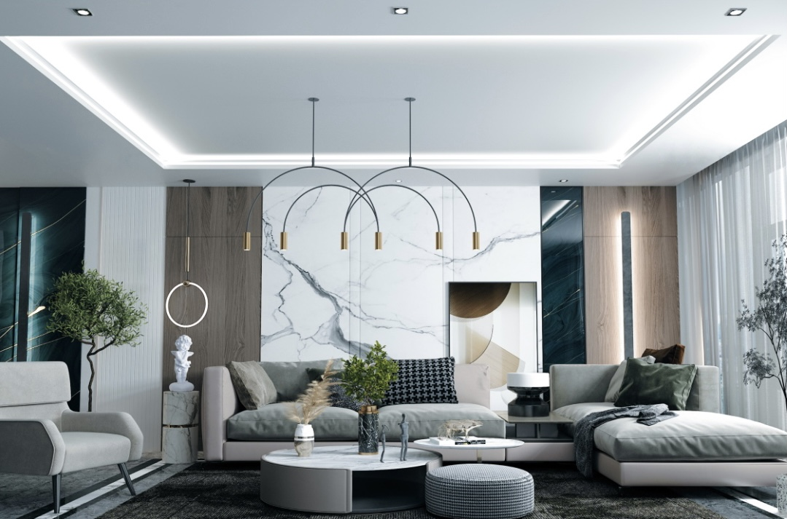

Догляд за натяжними стелями
Чи не кожен новий проект фахівці прикрашають ПВХ полотном. Це зручно, не дуже дорого, красиво та креативно. Але, навіть враховуючи те, що натяжні стелі виробляють з матеріалів, які не поглинають пил та не накопичують плісняву, однак чистити їх, рано чи пізно, все одно доводиться. Найчастіше стеля забруднюється на кухні, ну, зрозуміло, що приготування страв супроводжується плямами та розводами і саме тоді виникає питання "Чим та як чистити натяжну стелю?". Так, дане питання дійсно є важливим та потребує обговорення, тому почнімо.
Натяжні стелі не надто вибагливі та не потребують надмірного догляду, проте, як чистити їх, щоб не пошкодити, чим мити, аби не завдати збитків своїй кишені завжди хвилює.
Чим мити/витирати натяжні стелі
Насправді, щоб підтримувати стелю в чистоті достатньо просто хоча б раз на місяць протирати її сухою ганчіркою гладкої структури. Якщо бажаєте ретельніше дбати за чистотою можна також використовувати вологу серветку, але слідкуйте, аби після надмірного зволоження не залишились сліди розводів. Антистатичні властивості сучасної стелі дозволяють зводити догляд до мінімуму, тому хвилюватись не варто.
Слід зауважити, що в приміщеннях різного ступеня забруднення догляд та частота прибирання має проводитися також по-різному. Наприклад, кухня, ванна кімната, лоджія мають підвищену вологість і високу концентрацію пилу, тому доводиться мити частіше, от тільки робити це треба акуратно, аби не завдати подряпин стелі.
Як мити натяжні стелі
Предмети та засоби, якими збираєтеся чистити ПВХ стелю не мають містити абразивних речовин (жорсткі серветки, нерозчинний порошок і таке інше). Добре використовувати мильний розчин, спеціальний поліроль, засіб для ручного миття посуду або десяти % спиртовий розчин.
Спосіб очищення також залежить від якості та складових матеріалів, з яких виготовлено натяжне полотно. Також слідкуйте, щоб глянцеву поверхню Ваш мийний засіб не зробив матовою. Стеля втратить своє віддзеркалення та не матиме колишнього ефекту (найчастіше це може статися від порошків).
Якщо Ви не впевнені щодо вибору мийного засобу слід випробувати його на клаптиках плівки, що часто залишаються після монтажу стелі. Тоді Ви знатимете напевне, яку рідину слід використовувати.
Легкими рухами протирайте натяжне полотно, аби не завдати деформації, використовуйте воду невисокої температури (до 40º) і Ваша стеля від компанії "SilverVirgi" сяятиме новими, ідеально чистими фарбами!